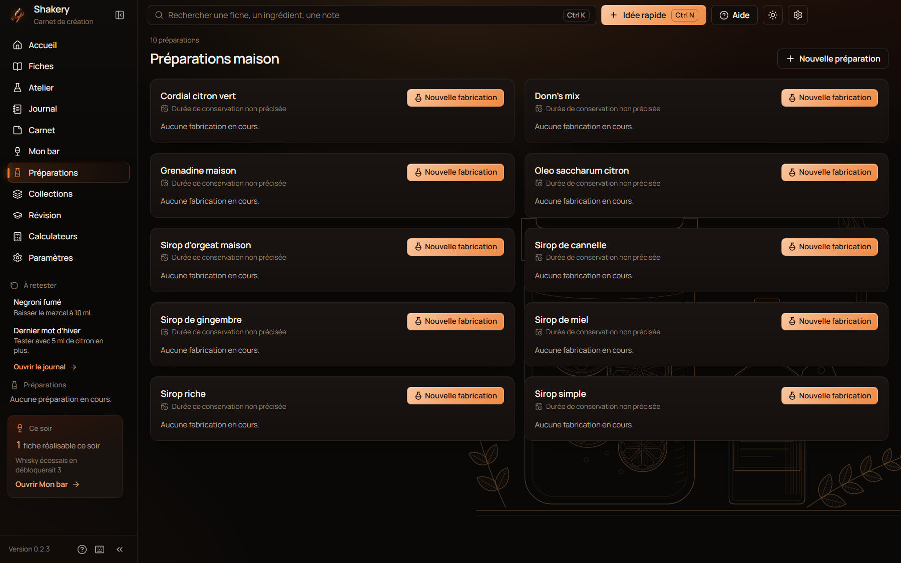

Shakery · refonte ergonomique · planche 06 sur 1024 novembre 2026
Préparations en liste à colonnes
Avant

Ce qui change
- Les dix cartes identiques deviennent une liste à colonnes alignées (préparation, conservation, dernier lot, à utiliser avant, action) séparées par des filets, pour lire l’état de toutes les préparations d’un coup d’œil.
- Les préparations sont rangées sous deux titres en petites capitales avec filet, « Lots en cours » en cuivre puis « Sans lot en cours » en gris, pour que ce qui demande ton attention soit en haut.
- Une durée de conservation inconnue s’affiche par un petit trait dessiné, à la place de la phrase « Durée de conservation non précisée » répétée sur chaque carte.
- Les deux lots en cours montrent leur date, leur volume, leur date limite et le temps restant, par exemple le sirop simple du 22 nov., à utiliser avant le 6 déc.
- Le cordial citron vert, lot du 23 nov., est signalé par « encore 2 jours » en cuivre doux et en gras, sans fond, sans pastille et sans orange vif.
- « Nouvelle fabrication » devient un bouton texte gris et discret sur chaque ligne, et « Nouvelle préparation » devient le seul bouton plein cuivre de la page.
- Une phrase sous le titre explique qu’une préparation est une base faite à l’avance (sirop, cordial, oleo saccharum) et qu’une fabrication enregistre un lot daté, et le sur-titre annonce « 10 préparations, 2 lots en cours ».
- Sous chaque nom, une ligne grise rappelle la base de la préparation, par exemple « Sucre et eau, 2 pour 1 », pour distinguer les sirops entre eux.
- Toutes les cellules d’une ligne, bouton compris, partagent la ligne de base du nom, et le motif du fond passe à 9 % d’opacité pour ne plus traverser le texte.
À trancher
- La ligne grise sous chaque nom doit-elle être tirée automatiquement des ingrédients de la recette, ou saisie à la main dans la préparation ?
- Pour les préparations sans lot, la colonne « Dernier lot » affiche « Jamais » ou la date du dernier lot. Cette information t’est-elle utile, ou préfères-tu une cellule vide ?
- Faut-il ajouter sur les lots en cours une action « Lot terminé » à côté de « Nouvelle fabrication » ?
- À partir de combien de jours restants un lot doit-il passer en cuivre (ici à 2 jours) ?
- Le bouton « Nouvelle fabrication » doit-il rester visible sur chaque ligne, ou n’apparaître qu’au survol de la ligne ?